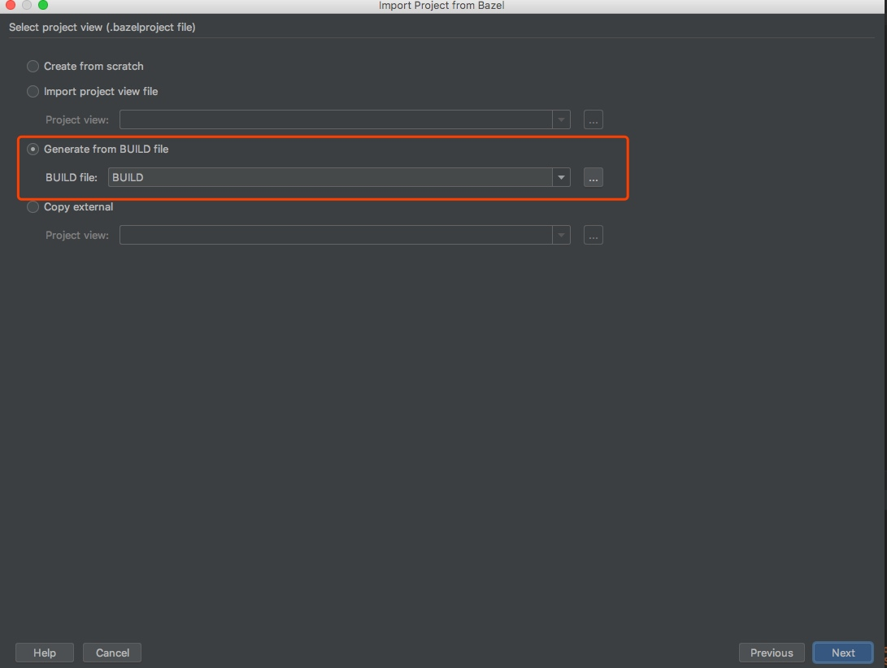
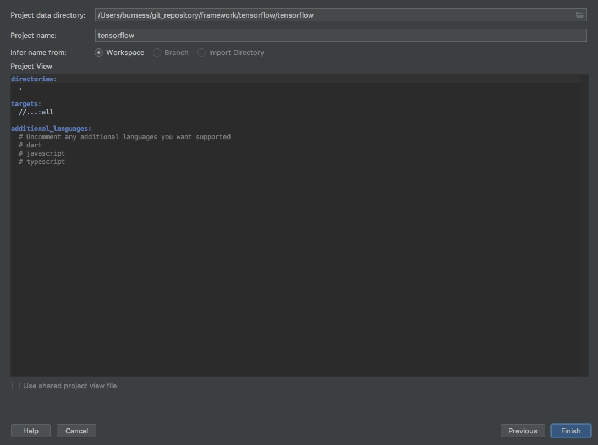
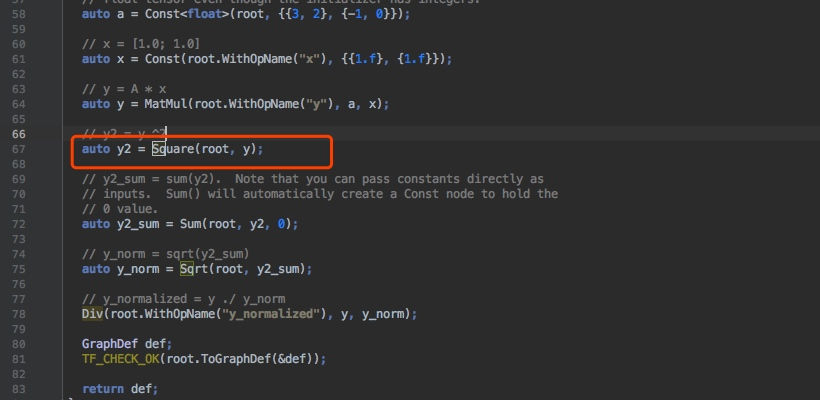
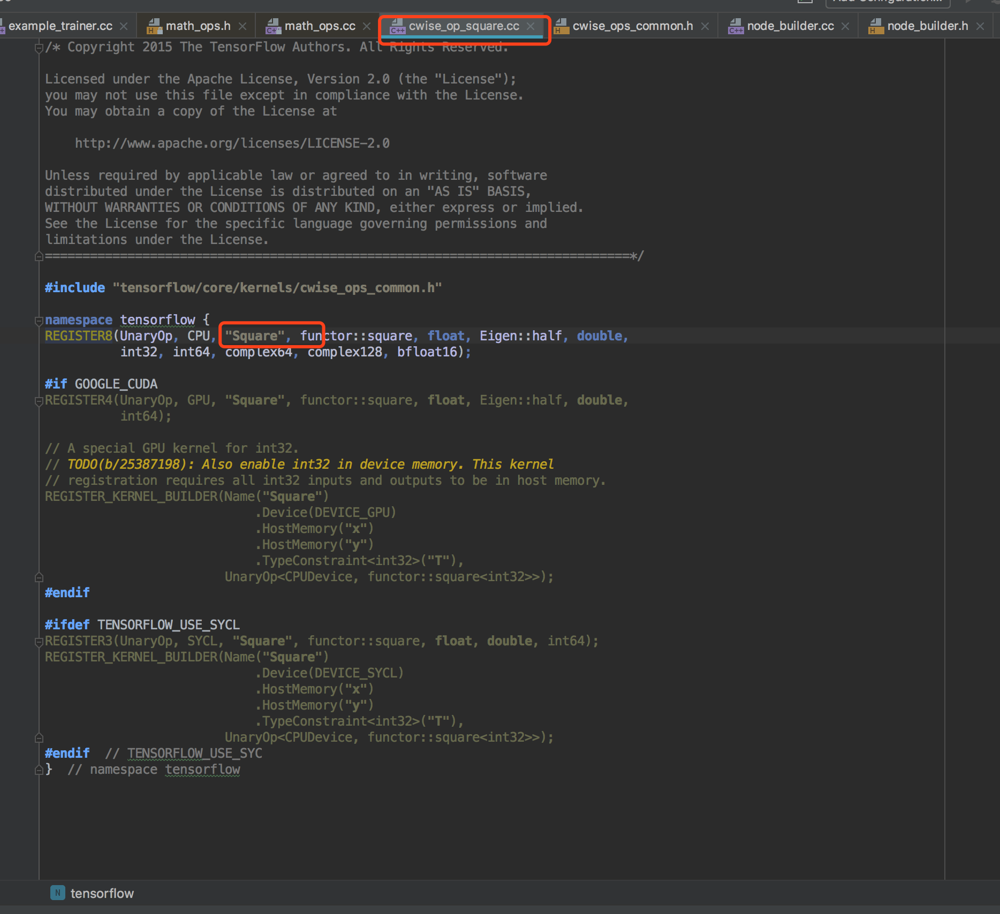
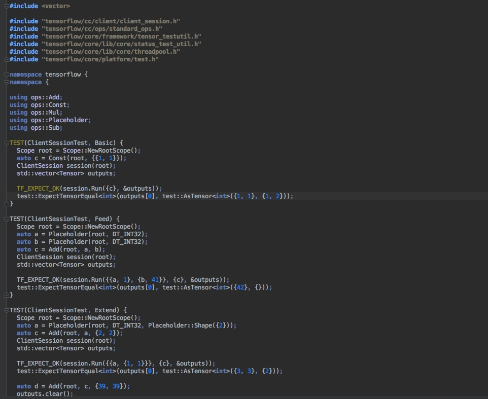

前一段时间，一直在忙框架方面的工作，偶尔也会帮业务同学去优化优化使用TensorFlow的代码，也加上之前看了dmlc/relay，nnvm的代码，觉得蛮有意思，也想分别看下TensorFlow的Graph IR、PaddlePaddle的Graph IR，上周五，看代码看的正津津有味的时候，看到某个数据竞赛群里面讨论东西，不记得具体内容，大概说的是框架的代码实现， 有几位算法大佬说看底层源码比较麻烦，因为比较早从框架，这块代码通常都还能看，问题都不大，和群里小伙伴吹水了半天之后，感觉是可以写篇如何看TensorFlow或者其他框架底层源码的劝退文了。
利其器
首先，一定是要找个好工作来看源码，很多人推荐vs code、sublime，我试过vs code+bazel的，好像也不错，但是后面做c++适应了clion之后，除了资源要求比较多，还是蛮不错的，使用c++一般推荐使用cmake来看编译项目，但是TensorFlow是bazel的，无法直接支持，最开始，这边是自己写简单的cmake，能够实现简单的代码跳转，但是涉及到比如protobuf之类的编译过后产生的文件无法跳转，比较麻烦，不够纯粹，很早之前知道clion有bazel的组件，但是不知道为啥一直搞不通，上周找时间再试了试，发现竟然通了，使用之后，这才是看tf源码的真正方式：
首先，选择合适版本的bazel，千万不能太高，也不能太低，这里我拉的是TF2.0的代码，使用bazel 0.24.0刚刚好，切记千万别太高也比太低, 千万别太高也比太低,千万别太高也比太低。

其次，clion上选择bazel的插件

第三步，./configure，然后按你的意图选择合适的编译配置

第四步，导入bazel项目：File=>



经过上面几步之后，接下来就要经过比较长时间的等待，clion会导入bazel项目，然后编译整个项目，这个耗时视你机器和网络而定（顺便提一句，最好保证比较畅通的访问github的网络，另外由于上面targets:all，会编译TensorFlow所有的项目，如果你知道是什么意思，可以自己修改，如果不知道的话我先不提了，默认就好，期间会有很多Error出现，放心，问题不大，因为会默认编译所有的模块）
经过上面之后，我们就可以愉快的看代码啦，连protobuf生成的文件都很开心的跳转啦


极简版c++入门
TensorFlow大部分人都知道，底层是c++写的，然后外面包了一层python的api，既然底层是c++写的，那么用c++也是可以用来训练模型的，大部分人应该都用过c++或者java去载入frozen的模型，然后做serving应用在业务系统上，应该很少人去使用c++来训练模型，既然我们这里要读代码，我们先尝试看看用c++写模型，文件路径如下图：

主要函数就那么几个：CreateGraphDef， ConcurrentSteps， ConcurrentSessions：
CreateGraphDef 构造计算图
GraphDef CreateGraphDef() {
// TODO(jeff,opensource): This should really be a more interesting
// computation. Maybe turn this into an mnist model instead?
Scope root = Scope::NewRootScope();
using namespace ::tensorflow::ops; // NOLINT(build/namespaces)
// A = [3 2; -1 0]. Using Const<float> means the result will be a
// float tensor even though the initializer has integers.
auto a = Const<float>(root, {{3, 2}, {-1, 0}});
// x = [1.0; 1.0]
auto x = Const(root.WithOpName("x"), {{1.f}, {1.f}});
// y = A * x
auto y = MatMul(root.WithOpName("y"), a, x);
// y2 = y.^2
auto y2 = Square(root, y);
// y2_sum = sum(y2). Note that you can pass constants directly as
// inputs. Sum() will automatically create a Const node to hold the
// 0 value.
auto y2_sum = Sum(root, y2, 0);
// y_norm = sqrt(y2_sum)
auto y_norm = Sqrt(root, y2_sum);
// y_normalized = y ./ y_norm
Div(root.WithOpName("y_normalized"), y, y_norm);
GraphDef def;
TF_CHECK_OK(root.ToGraphDef(&def));
return def;
}
定义graph 节点 root， 然后定义常数变量a (shape为2*2), x (shape为2* 1)，然后 y = A * x， y2 = y.2， y2_sum = sum(y2)， y_norm = sqrt(y2_sum), y_normlized = y ./ y_norm。代码很简洁， 看起来一目了然,
然后是ConcurrentSteps
void ConcurrentSteps(const Options* opts, int session_index) {
// Creates a session.
SessionOptions options;
std::unique_ptr<Session> session(NewSession(options));
GraphDef def = CreateGraphDef();
if (options.target.empty()) {
graph::SetDefaultDevice(opts->use_gpu ? "/device:GPU:0" : "/cpu:0", &def);
}
TF_CHECK_OK(session->Create(def));
// Spawn M threads for M concurrent steps.
const int M = opts->num_concurrent_steps;
std::unique_ptr<thread::ThreadPool> step_threads(
new thread::ThreadPool(Env::Default(), "trainer", M));
for (int step = 0; step < M; ++step) {
step_threads->Schedule([&session, opts, session_index, step]() {
// Randomly initialize the input.
Tensor x(DT_FLOAT, TensorShape({2, 1}));
auto x_flat = x.flat<float>();
x_flat.setRandom();
std::cout << "x_flat: " << x_flat << std::endl;
Eigen::Tensor<float, 0, Eigen::RowMajor> inv_norm =
x_flat.square().sum().sqrt().inverse();
x_flat = x_flat * inv_norm();
// Iterations.
std::vector<Tensor> outputs;
for (int iter = 0; iter < opts->num_iterations; ++iter) {
outputs.clear();
TF_CHECK_OK(
session->Run({{"x", x}}, {"y:0", "y_normalized:0"}, {}, &outputs));
CHECK_EQ(size_t{2}, outputs.size());
const Tensor& y = outputs[0];
const Tensor& y_norm = outputs[1];
// Print out lambda, x, and y.
std::printf("%06d/%06d %s\n", session_index, step,
DebugString(x, y).c_str());
// Copies y_normalized to x.
x = y_norm;
}
});
}
// Delete the threadpool, thus waiting for all threads to complete.
step_threads.reset(nullptr);
TF_CHECK_OK(session->Close());
}
新建一个session，然后设置10个线程来计算，来执行：
std::vector<Tensor> outputs;
for (int iter = 0; iter < opts->num_iterations; ++iter) {
outputs.clear();
TF_CHECK_OK(
session->Run({{"x", x}}, {"y:0", "y_normalized:0"}, {}, &outputs));
CHECK_EQ(size_t{2}, outputs.size());
const Tensor& y = outputs[0];
const Tensor& y_norm = outputs[1];
// Print out lambda, x, and y.
std::printf("%06d/%06d %s\n", session_index, step,
DebugString(x, y).c_str());
// Copies y_normalized to x.
x = y_norm;
}
每次计算之后，x=y_norm，这里的逻辑其实就是为了计算矩阵A的最大eigenvalue， 重复执行x = y/y_norm; y= A*x;
编译:
bazel build //tensorflow/cc:tutorials_example_trainer
执行结果，前面不用太care是我打印的一些调试输出：

简单的分析
上面简单的c++入门实例之后，可以抽象出TensorFlow的逻辑：
- 构造graphdef，使用TensorFlow本身的Graph API，利用算子去构造一个逻辑计算的graph，可以试上述简单地计算eigenvalue，也可以是复杂的卷积网络，这里是涉及到Graph IR的东西，想要了解的话，我建议先看下nnvm和relay，才会有初步的概念；
- 用于构造graphdef的各种操作，比如上述将达到的Square、MatMul，这些操作可以是自己写的一些数学操作也可以是TensorFlow本身封装一些数学计算操作，可以是MKL的封装，也可以是cudnn的封装，当然也可以是非数学库，如TFRecord的读取；
- Session的构造，新建一个session，然后用于graph外与graph内部的数据交互：session->Run({{"x", x}}, {"y:0", "y_normalized:0"}, {}, &outputs));这里不停地把更新的x王graph里喂来计算y与y_normalized，然后将x更新为y_normalized；
GraphDef这一套，太过复杂，不适合演示如何看TF源码，建议大家先有一定的基础知识之后，再看，这里我们摘出一些算法同学感兴趣的，比如Square这个怎么在TF当中实现以及绑定到对应操作
- 代码中直接跳转到Square类，如下图； 
- 很明显看到Square类的定义，其构造函数，接收一个scope还有一个input， 然后我们找下具体实现，如下图：

- 同目录下， math_ops.cc，看实现逻辑，我们是构造一个名为Square的op，然后往scope里更新，既然如此，肯定是预先有保存名为Square的op，接下来我们看下图：

- 这里讲functor::square注册到"Square"下，且为UnaryOp，这个我不知道怎么解释，相信用过eigen的人都知道，不知道的话去google下，很容易理解，且支持各种数据类型； 
- 那么看起来，square的实现就在functor::square，我们再进去看看，集成base模板类，且看起来第二个模板参数为其实现的op，再跳转看看：
 6.最后，我们到达了最终的实现逻辑：operator()和packetOp，也看到了最终的实现，是不是没有想象的那么难。
6.最后，我们到达了最终的实现逻辑：operator()和packetOp，也看到了最终的实现，是不是没有想象的那么难。

更重要一点
看完了上面那些，基本上会知道怎么去看TensorFlow的一些基础的代码，如果你了解graph ir这套，可以更深入去理解下，这个过程中，如果对TensorFlow各个文件逻辑感兴趣，不妨去写写测试用例，TensorFlow很多源码文件都有对应的test用例，我们可以通过Build文件来查看，比如我想跑下client_session_test.cc这里的测试用例

我们看一下Build文件中

这里表明了对应的编译规则，然后我们只需要
bazel build //tensorflow/cc:client_client_session_test

然后运行相应的测试程序即可

更更重要的一点
上面把如何看TensorFlow代码的小经验教给各位，但是其实这个只是真正的开始，无论TensorFlow、MXNet、PaddlePaddle异或是TVM这些，单纯去看代码，很难理解深刻其中原理，需要去找相关行业的paper，以及找到行业的精英去请教，去学习。目前网上ml system的资料还是蛮多的，有点『乱花迷人眼』的感觉，也没有太多的课程来分享这块的工作，十分期望这些框架的官方分享这些框架的干货，之后我也会在学习中总结一些资料，有机会的话分享给大家。最后，这些东西确实是很复杂，作者在这块也是还是懵懵懂懂，希望能花时间把这些内在的东西搞清楚，真的还蛮有意思的。